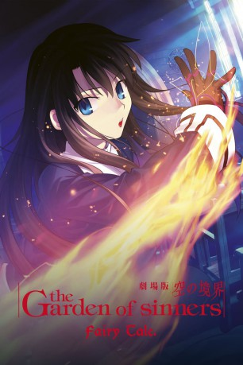

#5867 Garden of Sinners 6 - Verlorene Erinnerung
 
 IMDB-Wertung: 7.0 / 10
IMDB-Wertung: 7.0 / 10  Metascore: 0
Metascore: 0 
Mikiyas Schwester Azaka Kokutō bittet Tōko Aozaki um Hilfe bei einigen Vorfällen an ihrem Internat. Was mit einem Selbstmord einer Schüler begann endete damit, dass eine gesamte Klasse verschwand und das Gerücht von Feen im Umlauf kam. Da es den Anschein hat, dass sich niemand mehr an dieses Vorfälle zu erinnern scheint, wird von Toko schließlich Shiki Ryōgi zu Azaka geschickt, da sie mit ihren Todesaugen auch Feen erkennen kann. Während Azaka den Vorfällen auf den Zahn fühlt, entdeckt Shiki einen Magier unter dem Lehrpersonal, der ganz andere Ziele verfolgt.
Jahr: 2008
Dauer: 58 Minuten
FSK: 16
Land: Japan Studio: AniplexTonspuren: DD5.1 - ,
Untertitel: Deutsch,
Auflösung: 1080p (1920x1080) Größe: 1566 MB
Genre: Action, Thriller, Horror, Drama, Animation/Trick, Mystery
Regisseur: Takahiro Miura
Drehbuch: Hervé Palud
Soundtrack:
Darsteller:
Datei: X:\HD-Anime-Collections\Garden of Sinners - Kara No Kyoukai\Garden of Sinners 6 - Verlorene Erinnerung (2008, FSK16, 1920x1080).mkv seit 30.03.2017
Festplatte: Gemischt-01+Anime
 Es gibt insgesamt 10 Filme in der Gruppe 'HD-Anime-Collections\Garden of Sinners - Kara No Kyoukai'
Es gibt insgesamt 10 Filme in der Gruppe 'HD-Anime-Collections\Garden of Sinners - Kara No Kyoukai'